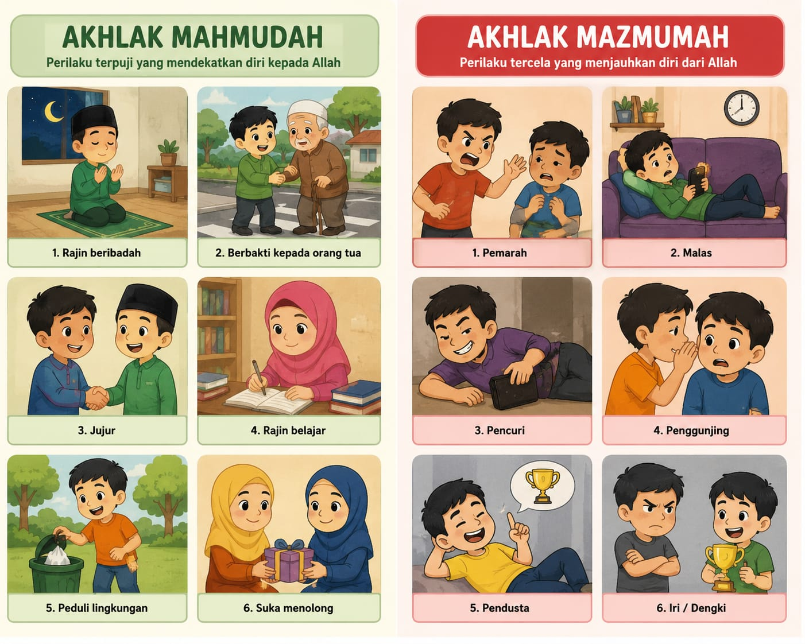
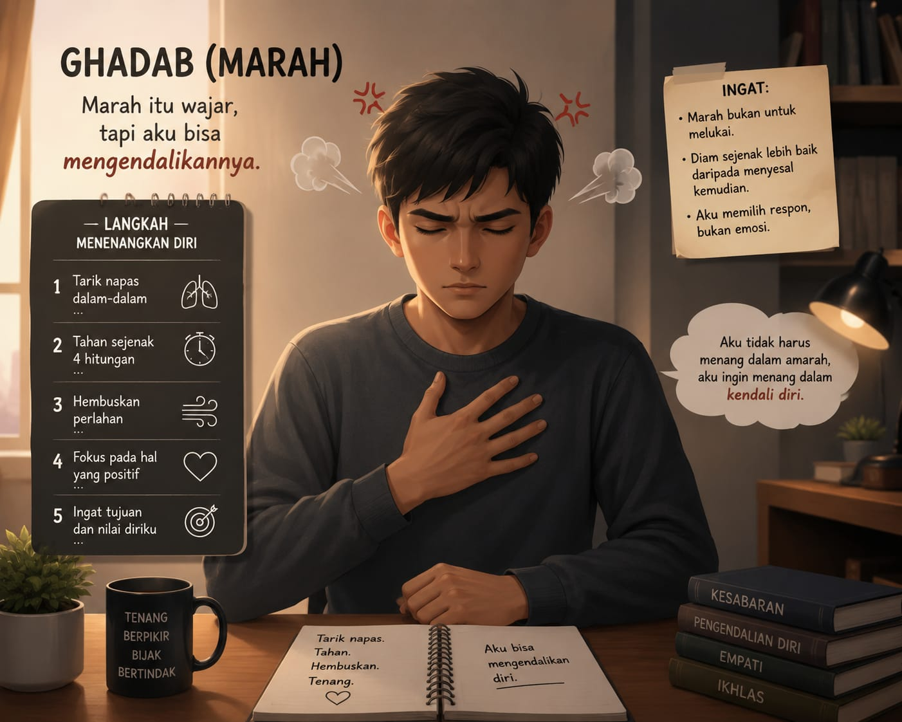
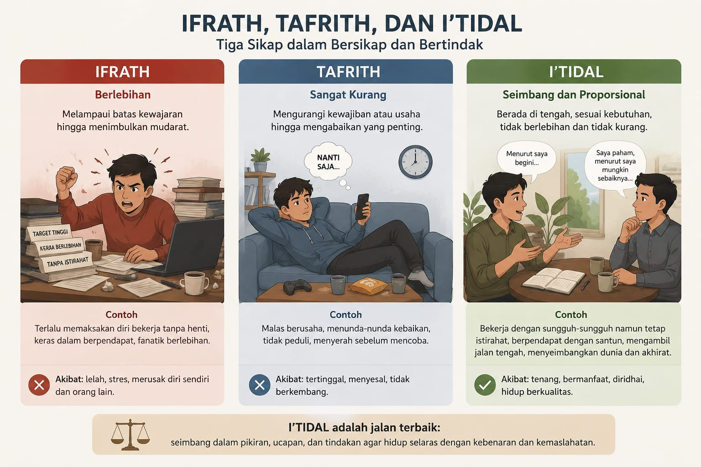
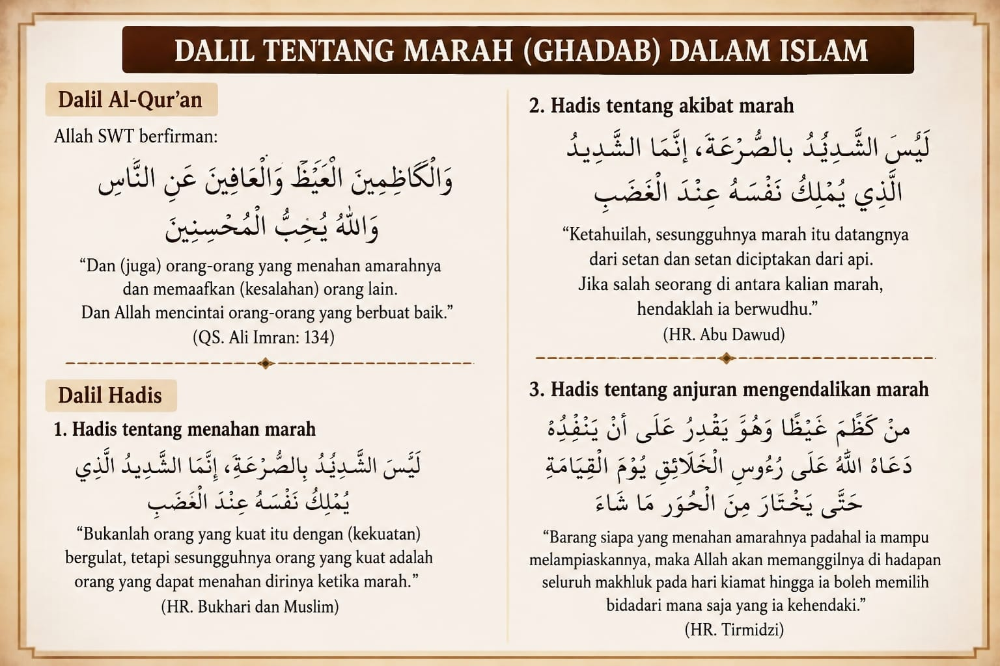

Akhlak adalah perilaku, ucapan, dan tingkah laku yang melekat pada diri seseorang. Dalam ajaran .Islam, akhlak dibagi menjadi dua, yaitu akhlak mahmudah (terpuji) dan akhlak mazmumah (tercela). Akhlak mahmudah merupakan perilaku baik yang sesuai dengan ajaran agama, seperti jujur, sabar, rendah hati, dan menghormati orang lain. Sementara itu, akhlak mazmumah adalah perilaku buruk yang harus dihindari, seperti sombong, iri hati, dan mudah marah.
Berikut ini contohnya:

•Salah satu akhlak yang sering dibahas adalah sifat temperamental atau ghadab (marah). Marah merupakan emosi dasar manusia yang muncul sebagai reaksi terhadap ancaman, ketidakadilan, atau sesuatu yang tidak sesuai dengan harapan. Pada dasarnya, marah adalah hal yang wajar dan dimiliki setiap orang. Namun, jika tidak dapat dikendalikan dengan baik, marah dapat berubah menjadi sifat yang merugikan diri sendiri maupun orang lain.jawaban atas doa-doa yang kita panjatkan.
Dalam Islam, ghadab yang tidak terkendali termasuk penyakit hati yang harus dihindari. Kemarahan yang berlebihan dapat menyebabkan seseorang berkata kasar, menyakiti perasaan orang lain, bahkan melakukan tindakan yang tidak baik. Oleh karena itu, setiap orang dianjurkan untuk melatih kesabaran dan pengendalian diri agar tidak mudah terbawa emosi. Berikut ini contoh nya:

Menurut para ulama, terdapat tiga tingkatan ghadab. Tingkatan pertama adalah ifrath, yaitu marah secara berlebihan hingga kehilangan kendali diri. Tingkatan kedua adalah tafrith, yaitu keadaan ketika seseorang hampir tidak memiliki rasa marah sama sekali, bahkan ketika menghadapi ketidakadilan. Tingkatan ketiga adalah i'tidal, yaitu sikap yang seimbang atau proporsional. Pada tingkat ini, seseorang mampu marah pada waktu dan alasan yang tepat serta tetap mengendalikan dirinya.Berikut ini contoh nya:

Dari penjelasan tersebut, dapat disimpulkan bahwa akhlak yang baik sangat penting dalam kehidupan sehari-hari. Marah bukanlah sesuatu yang sepenuhnya buruk, tetapi harus dikelola dengan bijaksana. Sikap i'tidal menjadi contoh terbaik karena menunjukkan keseimbangan antara emosi dan akal. Dengan membiasakan diri bersabar, berpikir sebelum bertindak, dan menjaga ucapan, kita dapat membentuk akhlak yang terpuji serta menciptakan hubungan yang harmonis dengan orang lain.
